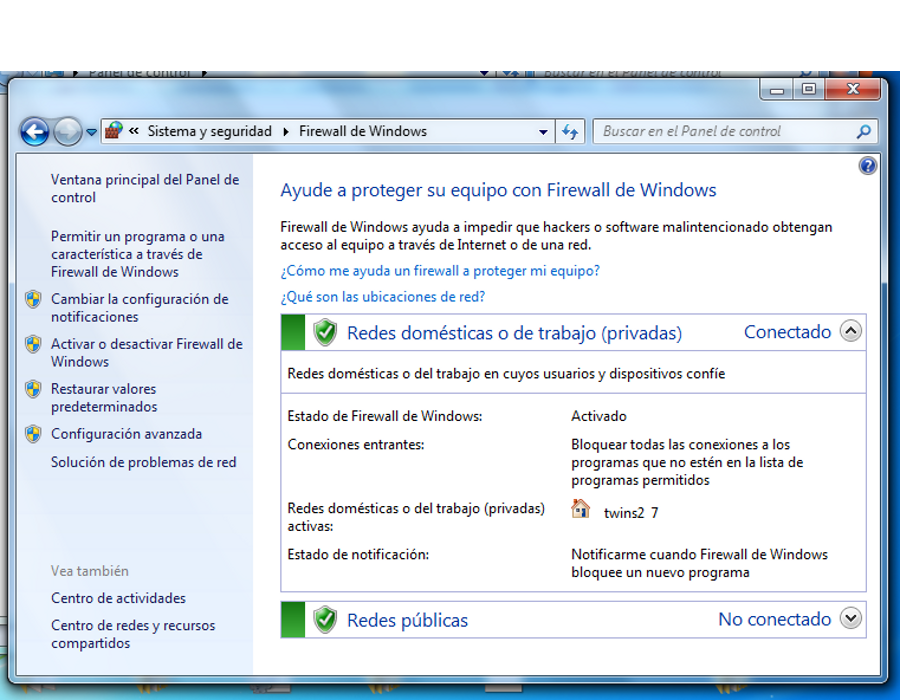
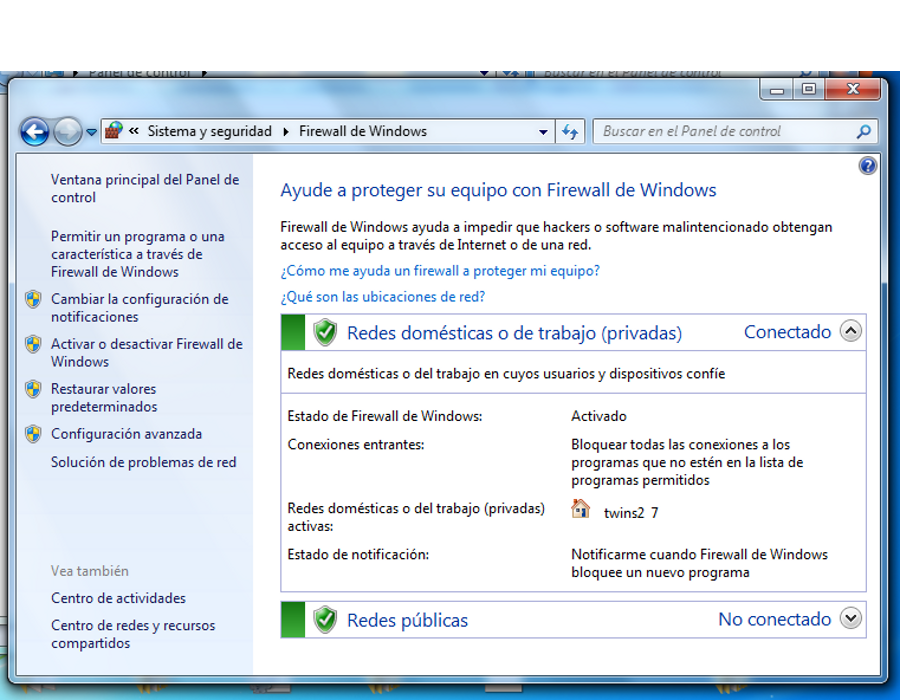

Taller Windows 7
Seguridad
Actualización del sistema y seguridad
Apreta la tecla → para avanzar.


Sabéis que hoy en día el ordenador es una máquina que se utiliza para cosas importantes, y por tanto conviene tomarse muy en serio la seguridad de los datos que en ella se almacenan.


Cambia de foto con las teclas: ↑ y ↓
El firewall es el guardián de nuestro equipo, encargado de permitir el acceso a nuestro equipo sólo a aquellas peticiones que hayan sido previamente autorizadas.
 



Cambia de foto con las teclas: ↑ y ↓

Los gadgets no son más que información útil presentada de una manera muy atractiva en nuestro escritorio. Tenemos gadgets de:


Cambia de foto con las teclas: ↑ y ↓
Veamos cuáles son las operaciones que podemos realizar con un gadget.

Es una herramienta que nos permitirá sacar capturas de pantalla de nuestro escritorio, para guardarlas en forma de imágenes, o incrustarlas en documentos.


Si tenemos micrófono podemos utilizar la grabadora para tomar notas de audio, o registrar conversaciones para enviar por correo.


La herramienta de notas nos permite poner a vista recordatorios y eventos que queramos tener a vista, al estilo de los famosos posits